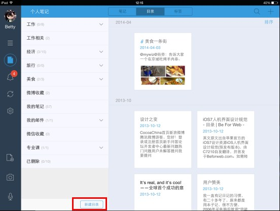
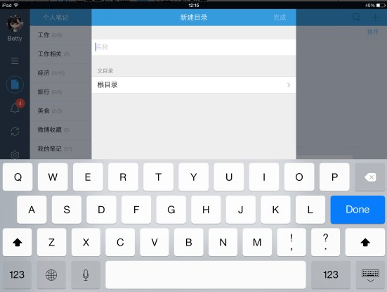
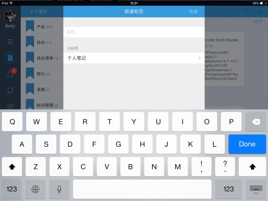

为知笔记支持多级目录功能，可以创建像电脑上文件夹一样的多级层级结构的目录，可以按自己的需求和使用习惯创建不同的根目录和子目录。
端支持创建根目录、子目录


iPad端支持删除目录
给笔记添加标签的目的是把笔记按不同的属性分类，这样方便后期统一查找。 为知笔记支持多级标签，您可以按自己的需求和使用习惯给笔记添加根标签或子标签。 在iPad端，打开根标签，默认会显示根标签和子标签下的笔记，你也可以到设置里更改只显示根标签下的笔记。
手机端支持创建根标签、子标签

手机端支持删除标签
默认状态下，点击根标签会显示此根标签下所有子标签的笔记